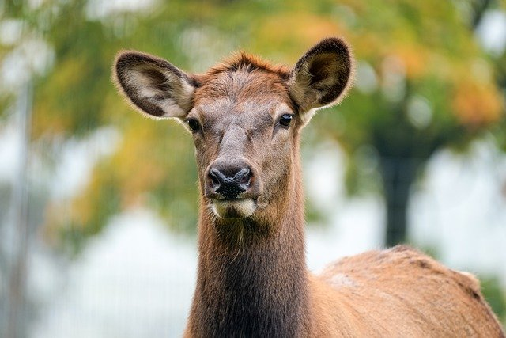

Chcesz mnie poznać? Proszę bardzo
Jestem Andrzej Kocunkiewicz - szanowany na całym świecie kocon oraz znawca piesunów. Mam kilka kotełów: Bartusia, Maciusia, Prynces Miłoszka i tego jebanego oszuta Matyldę CO CO. W wolnym czasie spędzam czas z moją Kozą meee. Trenuję crossfit i studiuję prawo CO. Ziemia dla Ziemniaków!